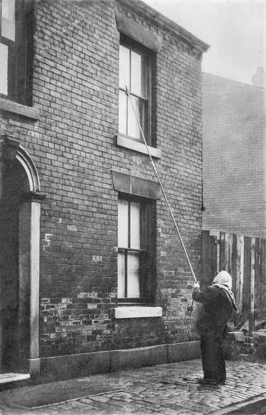
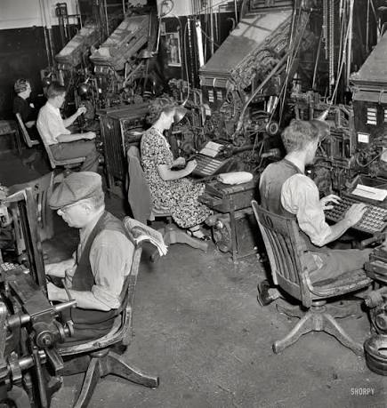
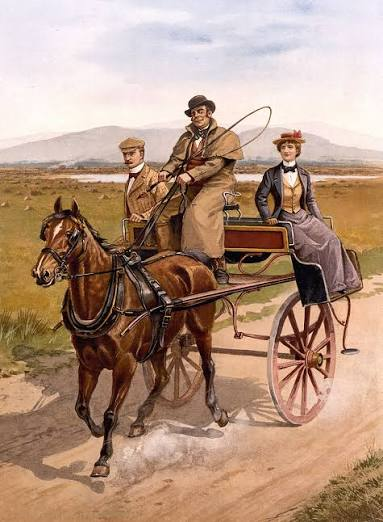
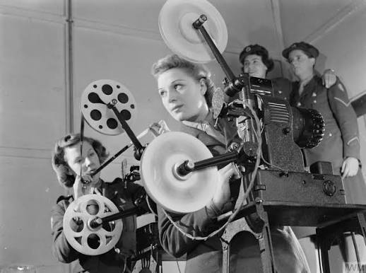

Knocker-up
19th – mid-20th century
Walked the streets before dawn and tapped on bedroom windows with a long pole to wake workers for their shift.
Replaced by alarm clocks.
Ten cards in six drawers. Hover over a card to bring the old photograph back to life.

19th – mid-20th century
Walked the streets before dawn and tapped on bedroom windows with a long pole to wake workers for their shift.
Replaced by alarm clocks.
18th – early 20th century
Lit, tended and put out gas street lamps by hand on a nightly round.
Replaced by electric street lighting.
Late 19th – 20th century
Connected callers by plugging cords into the right sockets of a switchboard.
Replaced by automatic exchanges.

Late 19th century – 1980s
Typed on a machine that cast whole lines of newspaper text in hot metal.
Replaced by phototypesetting and desktop publishing.
Antiquity – 19th/20th century
Hauled water from wells and rivers to people's homes, or sold it on the street.
Replaced by piped water systems.

18th – early 20th century
Drove hired horse carriages through city streets: the original taxi.
Replaced by cars, trams and buses.
19th – early 20th century
Cut blocks of ice from frozen lakes and rivers in winter to stock icehouses.
Replaced by refrigerators.

20th century – 2010s
Loaded reels and kept the lamp bright and the picture sharp at every screening.
Replaced by digital projectors.
1890s – late 1920s
Played live music as the silent film ran, giving each scene its mood.
Replaced by recorded film sound.
19th – 20th century
Did long mathematical calculations by hand, in teams that checked each other's work.
Replaced by electronic computers and software.
Photos from Wikimedia Commons. The author and licence of each photo are on its file page:
Icons: Bootstrap Icons. Fonts: DM Serif Display, Work Sans and Special Elite from Google Fonts. Texts were prepared with AI assistance.